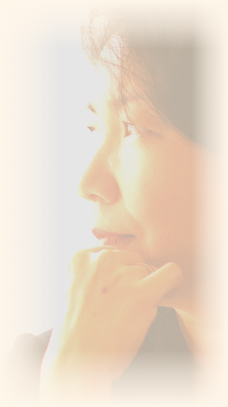

Medicina Física e Reabilitação
CRM 129.885/SP · RQE 72.940
Médica fisiatra. Perícia médica judicial e assistência técnica em Sorocaba e região.
Como posso ajudar↓Contato direcionado
Escolha o caminho que mais se aproxima da sua necessidade.
Assistência técnica, parecer, quesitos e análise crítica de laudo pericial.
Falar no WhatsApp→Avaliação médica pericial e parecer técnico para uso em processo.
Falar no WhatsApp→Sobre
Fisiatria é a especialidade médica da incapacidade, da lesão e da limitação funcional. É exatamente o objeto da perícia previdenciária, trabalhista e acidentária.
Antes de examinar processos, foram quinze anos avaliando pessoas: amputações, dor crônica, distúrbios musculoesqueléticos e sequelas neurológicas, no Instituto de Reabilitação Lucy Montoro, no Hospital 9 de Julho e na Diretoria Clínica do Centro de Reabilitação Lucy Montoro de Sorocaba.
Medicina pela FMUSP. Residência em Fisiatria no Hospital das Clínicas da FMUSP. Título de especialista em Medicina Física e Reabilitação pela Associação Médica Brasileira. Pós-graduação em Medicina Legal e Perícias Médicas.
Na função de perita nomeada ou na de assistente técnica, o compromisso é o mesmo: rigor técnico na avaliação funcional. Nenhuma das duas comporta conclusão formada antes do exame.

Atuação
Perícia previdenciária, trabalhista, acidentária e cível.
Avaliação de capacidade laboral em processos previdenciários.
Avaliação técnica em processos que envolvem capacidade para o trabalho.
Análise de sequelas e de nexo entre o evento e a condição apresentada.
Avaliação médica em processos com discussão técnica sobre saúde ou capacidade.
Atuação técnica junto ao escritório, com acompanhamento da perícia oficial.
Formulação de quesitos técnicos orientados à discussão médica do caso.
Parecer fundamentado sobre documentação, laudo ou questão médica do processo.
Leitura prévia da documentação médica antes da decisão de seguir com a demanda.
Presença no exame, com registro do que foi e do que não foi avaliado.
Prestação de esclarecimentos técnicos quando solicitado.
Não atendo casos de erro médico.
Atendimento
Av. Rudolf Dafferner, 400, Edifício São Paulo, sala 207 · Sorocaba/SP, CEP 18085-005
Segunda 14h às 18h · Quarta 8h às 14h · Sexta 14h às 18h. Somente com hora marcada.
Sorocaba e região, com atendimento presencial mediante agendamento e trabalho documental à distância.
Prédio com elevador. Entrada e banheiro adaptados para cadeirantes e pessoas com mobilidade reduzida. Estacionamento pago no local.
Canais oficiais